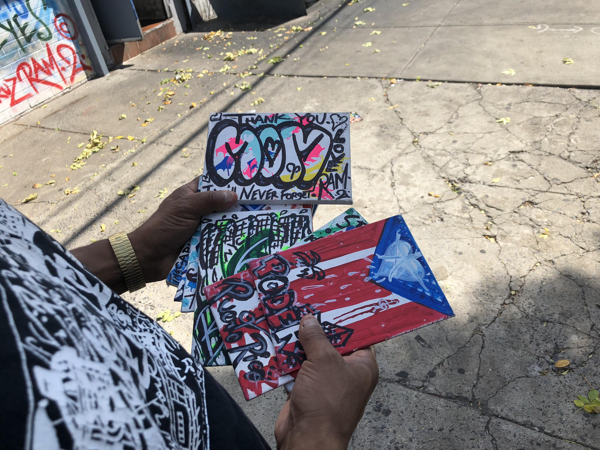
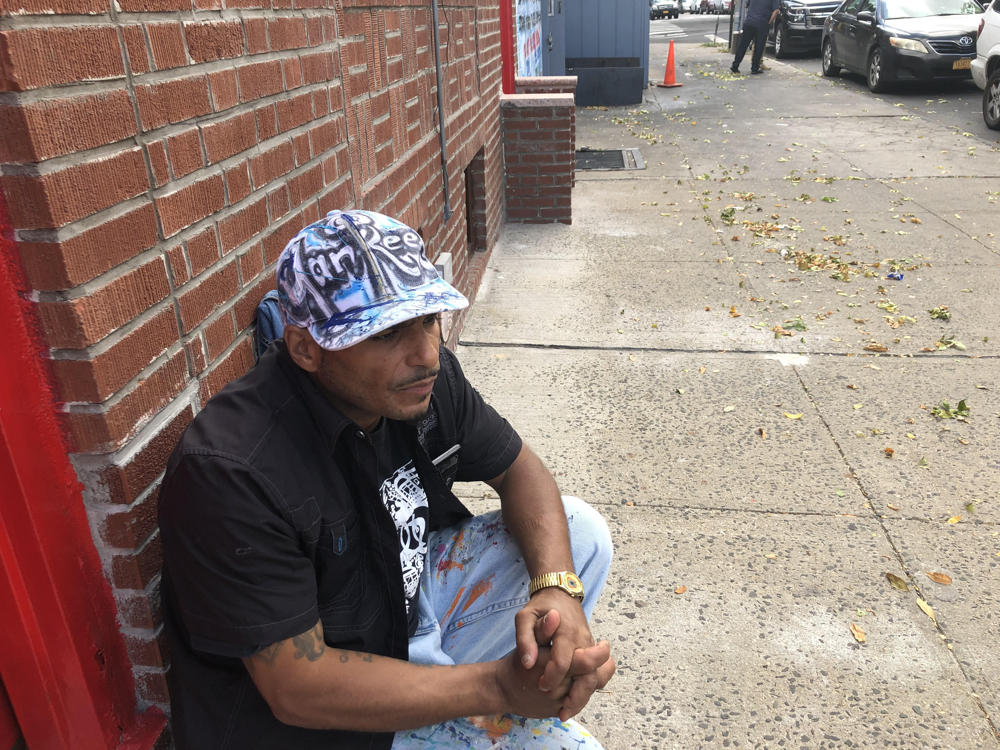
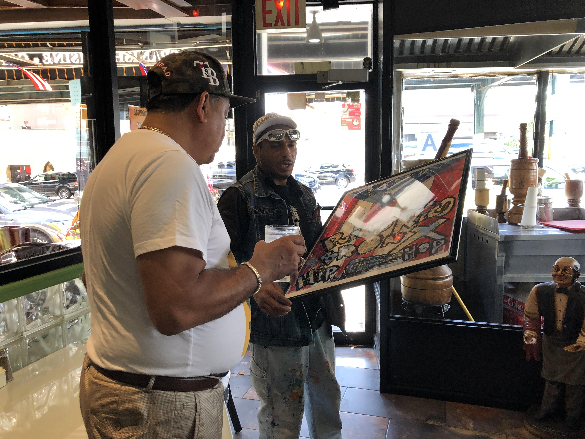
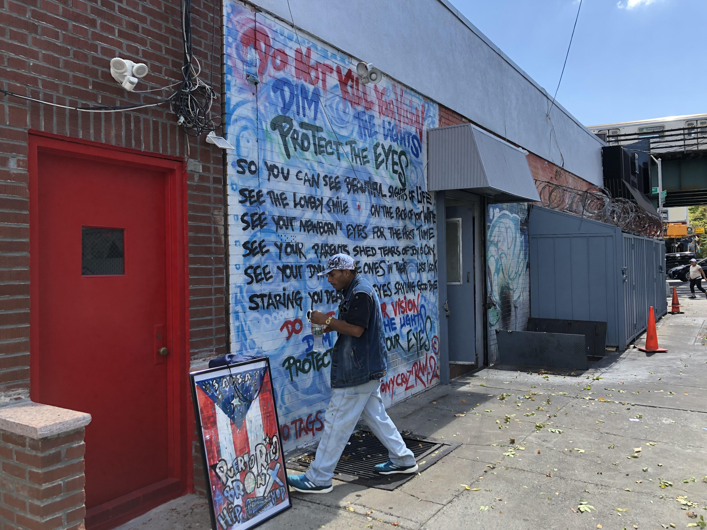

Tony Cruz Ram 2 uses Vision Campaign to bring awareness to dangerous affects of blue and LED lights, while expressing himself through graffiti art.
Tony Cruz standing in front of his "Don't kill Your Vision, Dim the Lights, Protect Your Eyes" mural.
Tony Cruz stood in front of the side wall of “Joe’s Place,” a longtime Latin American restaurant between Westchester and Theriot Avenue in the Bronx. “This is the most important mural, it brought me to the U.N.” said Cruz staring up at his graffiti mural.
He completed it in April of last year in support of his campaign, “Don’t Kill Your Vision, Dim the Lights, Protect Your Eyes.” He presented his campaign at Baruch College, New York’s Computer Center for Visually Impaired People in April of that year.
He almost didn’t finish the mural. After being diagnosed in 2009 with Macular Telangiectasia type 2, also known as Mac Tel which has no treatment or cure, The Bronx native found himself depressed and unable to deal with his vision loss for a long time.
“Adapting, for people with low vision or blindness is very important to realize that we go through self-pity. When you go through things in life, you forget about who you are, you forget about what you are, and what you possess,” The South Bronx native, 50 said.
Tony Cruz presenting his graffiti art minuture canvases.
Cruz confirmed that he’ll be teaching his very own class at New York’s Museum of Modern Art for visually impaired artists next February. Registration starts December 1st. “The goal is not for them to be a graffiti artist, but to harness the tool of self-expression to make sense of life.”
Chef and founding partner of Sabrosura, Nelson Ng hired Cruz in 1996 to create ceiling art piece for his Westchester Avenue chain restaurant which is still there today. Ng said that although a lot of things have changed in the Bronx, the art stays the same, it’s part of the culture, and environment.
Holistic Nutritionist, Keemon Spears, has known Cruz for years and supports his efforts. “What he’s trying to do is show the damaging effect of blue lights and LED lights. From the time we wake up we are looking into this blue light that has an effect on our eyes,” said Spears.
Tony Cruz reminscing while in conversation about his campaign and his dreams.
“I already achieved my dreams, I don’t dream no more, I got goals, business goals, because I still need money,” laughed Cruz. Cruz was invited to the U.N. this past February by Founding Member of 1 Million for 1 Billion, Kareem Hertzog.
“It's unfortunate that Tony didn't get to reap the benefits when he was in his prime when the culture was expanding globally but the beauty is now that so many people around the globe connect with hip hop, I feel the beautification of certain cities globally using graffiti has a tremendous impact,” said Hertzog.
Tony Cruz promoting his art work to a customer in "Joes Place" on Westchester avenue.
“It's unfortunate that Tony didn't get to reap the benefits when he was in his prime when the culture was expanding globally but the beauty is now that so many people around the globe connect with hip hop, I feel the beautification of certain cities globally using graffiti has a tremendous impact,” said Hertzog.
Cruz continues to use Facebook and social media to promote his campaign, and keep the conversation going for people who are unaware of the dangers of Blue and LED lights.
Tony Cruz in front of his mural and his frame picture of a Puerto Rican flag.
He is currently working on a graffiti book and says a documentary is the works, but does not have a set date yet. “Even though I can’t see far or near, my spiritual vision has no limit,” said Cruz.